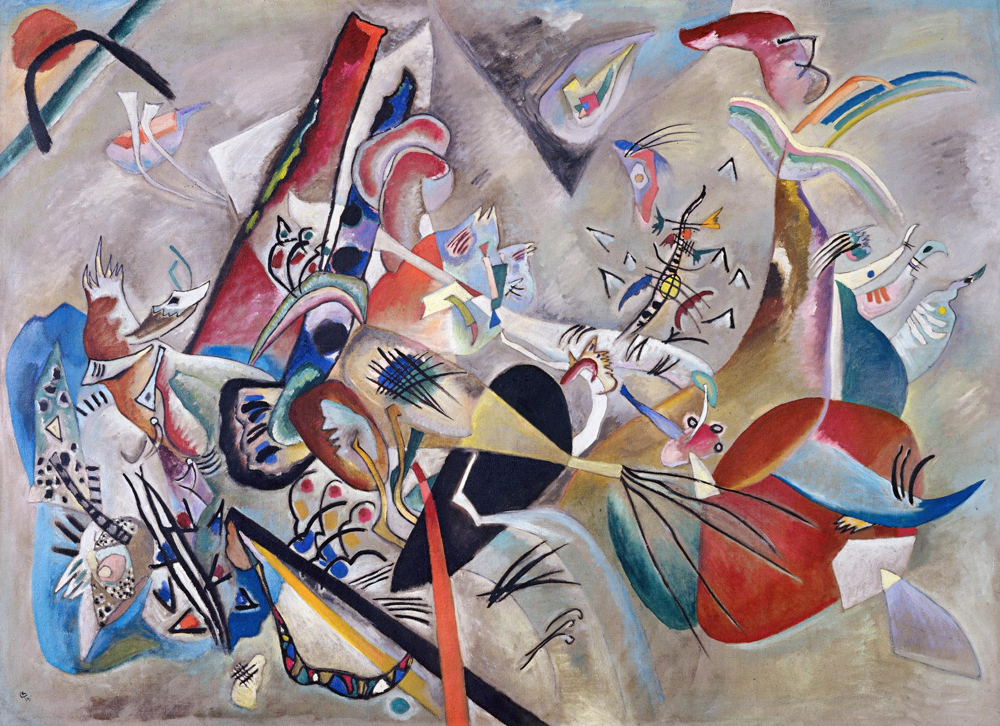
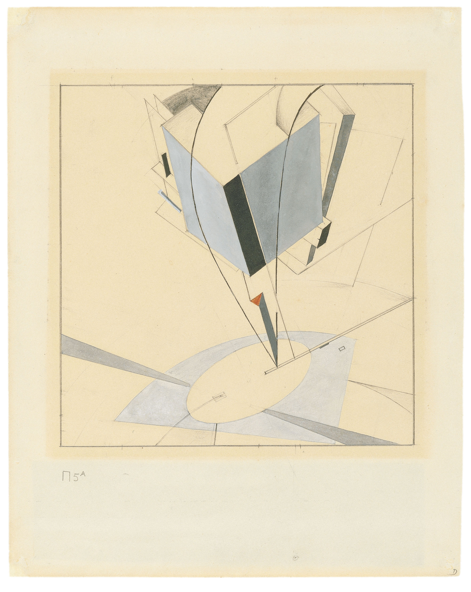
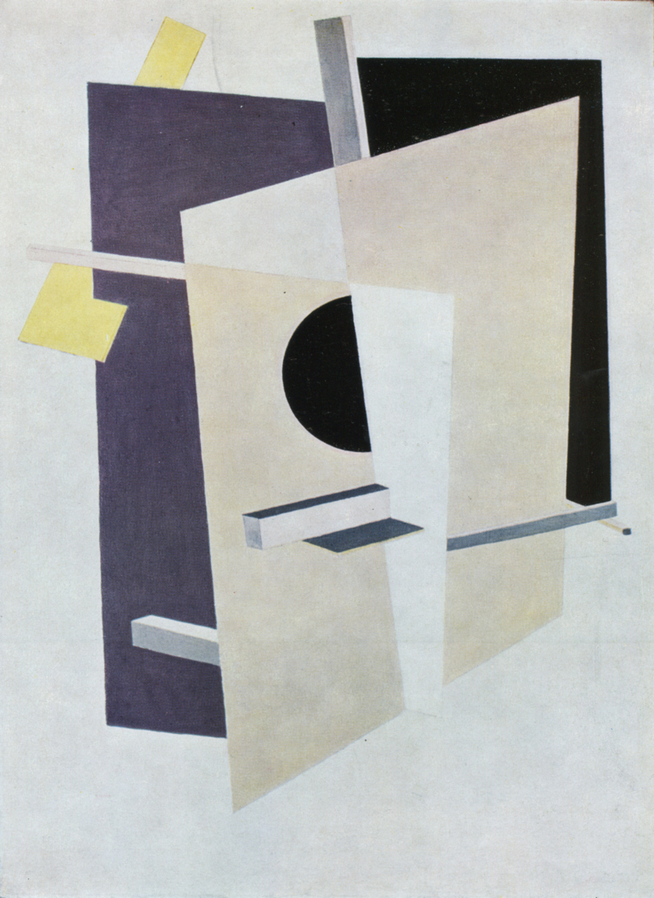
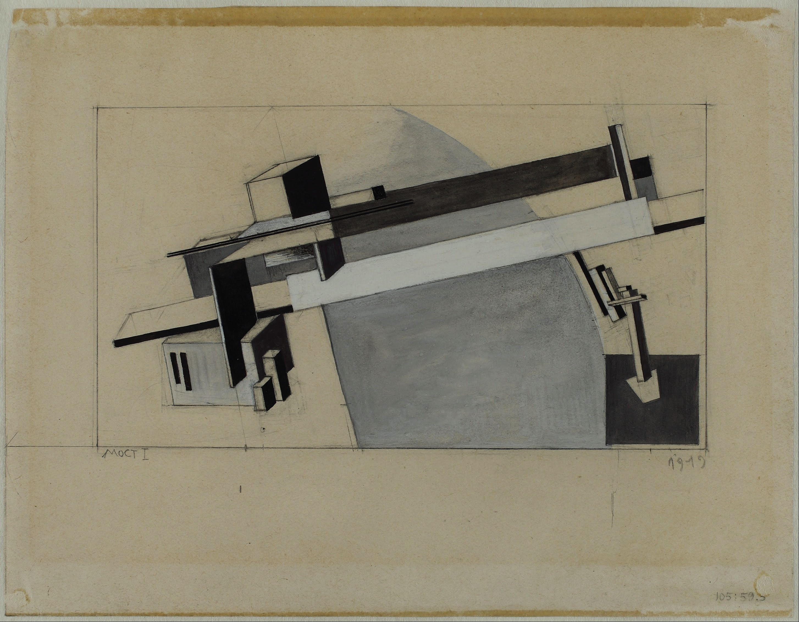
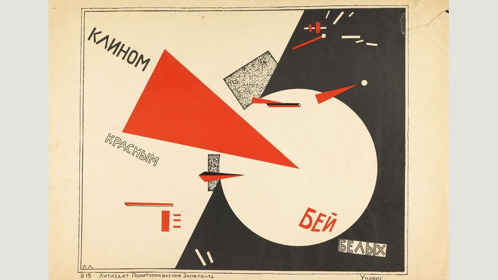
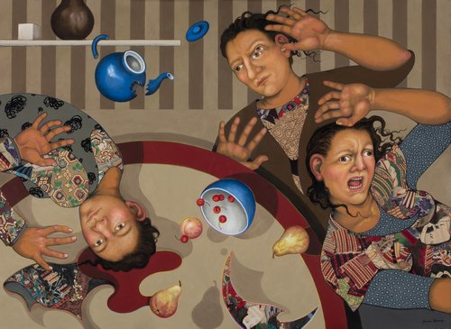
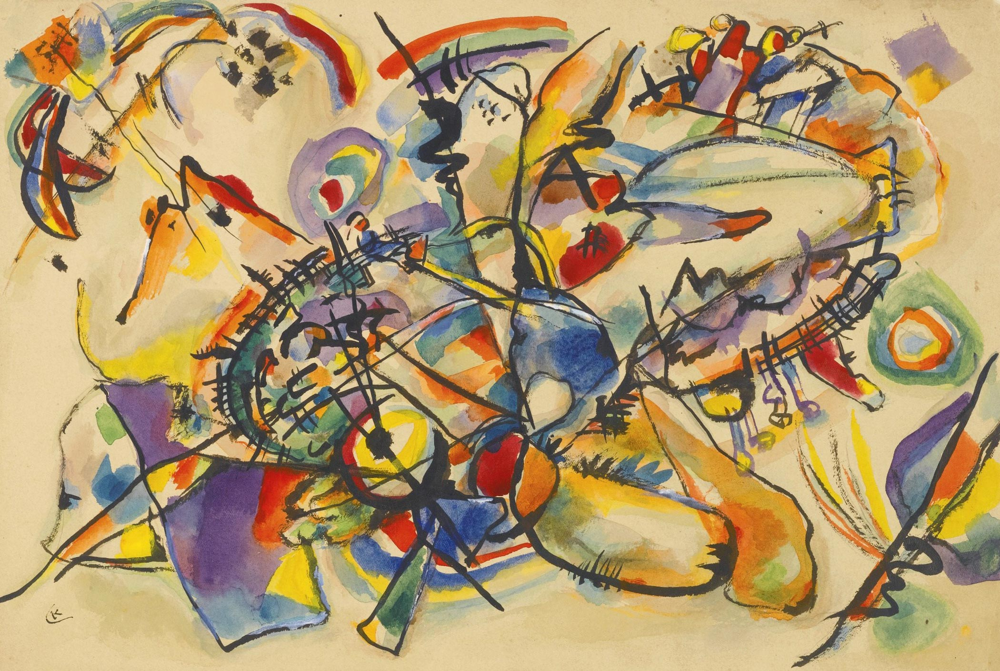
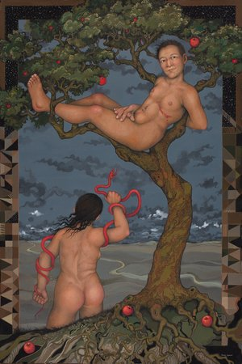

Wassily Kandinski - In Grey

El Lissitzky - Proun 5A

El Lissitzky - Proun Interpenetrating Planes
|

El Lissitzky - Proun 1A

El Lissitzky - Beat the Whites with the Red Wedge

Julie Speed - The Upset Table
|

Wassily Kandinsky - Untitled

Julie Speed - She Took the Snake
|